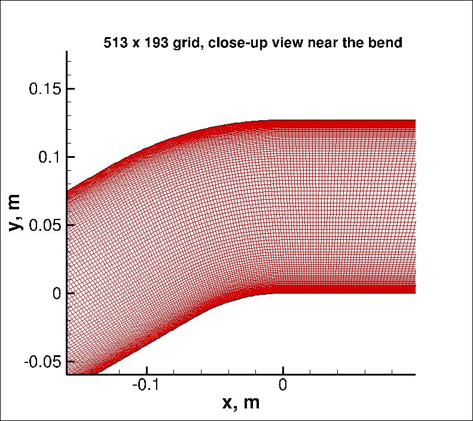

|
Langley Research CenterTurbulence Modeling Resource |
Return to: 2D Convex Curvature Boundary Layer Case Intro Page
Return to: Turbulence Modeling Resource Home Page
Grids - Convex Curvature Boundary Layer Case
A series of 5 nested 2-D grids are provided for
the Convex Curvature case. Each coarser grid is exactly every-other-point
of the next finer grid, ranging from the finest 1025 x 385 to the coarsest 65 x 25 grid.
The finest grid has minimum spacing at the wall of about y=1.1 x 10-6, giving an approximate average
y+ of less than 0.1 at the Reynolds number run.
The grid is stretched from both walls in the wall-normal direction, and there is some stream-wise clustering near the bend.
The figure below shows a near-field view of the 513 x 193 grid.
Note that the wall-shapes in the curved region have (unintentional) small oscillations in the
second-derivative of the provided grids;
these will cause small oscillations in computed Cp and Cf near their peaks (believed to be inconsequential).

Note: be sure to use double precision when reading the grids!
STRUCTURED VERSIONS OF GRIDS
PLOT3D Files
The structured PLOT3D grids are given in two different ways, as 2-D grids (x-y plane) or as 3-D grids (two
identical x-z planes, separated by a distance y=1,
giving one spanwise cell for all grid levels). You may use whichever is more convenient for your particular
application.
Format for the structured 2D grids is PLOT3D-type, formatted, MG, 2D (nbl=1) - note that you
must use double precision when reading! :
read(2,*) nbl
read(2,*) (idim(n),jdim(n),n=1,nbl)
do n=1,nbl
read(2,*) ((x(i,j,n),i=1,idim(n)),j=1,jdim(n)),
+ ((y(i,j,n),i=1,idim(n)),j=1,jdim(n))
enddo
Download the 2-D version of the grids in PLOT3D format here:
Format for the structured 3D grid is PLOT3D-type, formatted, MG, 3D (nbl=1, and idim in this case is 2) - note that you must use double precision when reading! :
read(2,*) nbl
read(2,*) (idim(n),jdim(n),kdim(n),n=1,nbl)
do n=1,nbl
read(2,*) (((x(i,j,k,n),i=1,idim(n)),j=1,jdim(n)),k=1,kdim(n)),
+ (((y(i,j,k,n),i=1,idim(n)),j=1,jdim(n)),k=1,kdim(n)),
+ (((z(i,j,k,n),i=1,idim(n)),j=1,jdim(n)),k=1,kdim(n))
enddo
Download the 3-D version of the grids in PLOT3D format here:
If desired, example Neutral Map Files associated with 3-D version of the grids are given here (these files specify grid indices associated with each boundary condition - see The Neutral Map File):
CGNS Files
The structured grids are also available as CGNS files (3-D versions only, with two identical x-z planes, separated by a distance y=1, giving one spanwise cell for all grid levels). Note that the BCs written inside the CGNS files are for guidance only, and may not reflect the appropriate BCs needed for your application. To read/write CGNS files, (free) software may be necessary if your pre/post-processing tools do not already handle it. See: CGNS Website for details.
Download the 3-D version of the grids in CGNS format (gzipped) here:
UNSTRUCTURED VERSIONS OF GRIDS
CGNS Files
The unstructured versions of the same grids are all given as CGNS files. Note that the BCs written inside the CGNS files are for guidance only, and may not reflect the appropriate BCs needed for your application. To read/write CGNS files, (free) software may be necessary if your pre/post-processing tools do not already handle it. See: CGNS Website for details.
The unstructured grids are all given as 3-D grids (two identical x-z planes, separated by a distance y=1, giving one spanwise cell for all grid levels). They are given as hexahedra (quadrilaterals in the x-z plane).
Download the unstructured CGNS grids (gzipped) as 3-D hexahedra (quadrilaterals in x-z plane) here:
Return to: 2D Convex Curvature Boundary Layer Case Intro Page
Return to: Turbulence Modeling Resource Home Page
Recent significant updates:
01/27/2015 - mention of oscillations in second derivative of wall shape in provided grids
Responsible NASA Official:
Ethan Vogel
Page Curator:
Clark Pederson
Last Updated: 05/13/2019